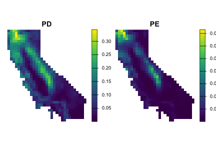
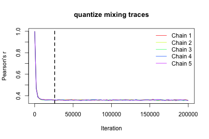
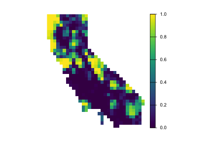
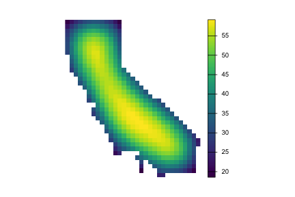
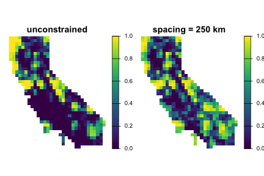
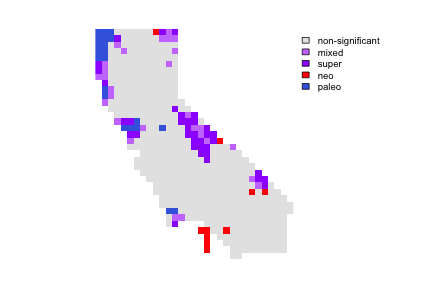

This vignette covers topics related to alpha diversity and endemism, including calculation of basic diversity metrics as well as statistical significance testing using null randomization.
To get started, let’s load the phylospatial library, as
well as terra for visualization. Note that the functions
covered here all require a phylospatial object as input;
see vignette("phylospatial-data") for details on
constructing data sets. We’ll use the moss() example data
here.
library(phylospatial); library(terra)
ps <- moss()Diversity measures
The ps_diversity() function calculates the following
alpha diversity measures. While there are a wide variety of
phylogentically-informed diversity metrics in the literature, the
phylospatial package focuses primarily on “node-based”
diversity metrics like Faith’s PD that give equal treatment to
clades/branches at all levels. Phylogenetic diversity metrics can be
categorized as addressing richness, divergence, and regularity (Tucker
et al. 2017), as listed below. Note that an alternative approach to
assessing divergence is through null model analysis of richness metrics,
discussed later in this vignette.
Richness metrics:
- PD: Phylogenetic diversity, i.e. total length of all branch segments present in a location
- PE: Phylogenetic endemism, i.e. endemism-weighted PD
- ShPD: Shannon’s pylogenetic diversity, a.k.a “phylogenetic entropy”
- ShPE: Shannon’s pylogenetic diversity, weighted by endemism
- SiPD: Simpson’s phylogenetic diversity
- SiPE: Simpson’s phylogenetic diversity, weighted by endemism
- TR: Terminal richness, i.e. richness of terminal taxa (in many cases these are species). For binary data this is the total number of terminals in a site, while for quantitative data it is the sum of probability or abundance values.
- TE: Terminal endemism, i.e. total endemism-weighted diversity of terminal taxa (a.k.a. “weighted endemism”)
- CR: Clade richness, i.e. richness of taxa at all levels (equivalent to PD on a cladogram)
- CE: Clade endemism, i.e. total endemism-weighted diversity of taxa at all levels (equivalent to PE on a cladrogram)
Divergence metrics:
- RPD: Relative phylogenetic diversity, i.e. mean branch segment length of residents (equivalent to PD / CR)
- RPE: Relative phylogenetic endemism, i.e. mean endemism-weighted branch length (equivalent to PE / CE)
- MPDT: Mean pairwise distance between terminals, i.e. the classic MPD measure
- MPDN: Mean pairwise distance between nodes, a node-based version of MPD that calculates the average branch length separating all pairs of collateral (non-lineal) nodes including terminals and internal nodes, giving more representation to deeper branches
Regularity metrics:
- VPDT: Variance in pairwise distances between terminals
- VPDN: Variance in pairwise distances between collateral nodes
All measures use quantitative community data if provided. “Endemism”
is the inverse of the total occurrence mass (the sum of presence,
probability, or abundance values) across all sites in the analysis. See
?ps_diversity for equations giving the derivation of each
metric.
Let’s compute some diversity metrics for our phylospatial data set.
Since our data is raster-based, by default the function will return a
SpatRaster with a layer for each measure. Here we’ll make
plots of PD and PE:
div <- ps_diversity(ps, metric = c("PD", "PE"))
plot(div, axes = FALSE)
Null model randomization
We can also use randomization to calculate the statistical
significance of these diversity metrics under a null model, using the
ps_rand() function. phylospatial supports a
wide range of randomization schemes via the vegan and
nullcat libraries. Here let’s run our randomization using
quantize, a stratified randomization scheme designed for
use with continuous occurrence data, in combination with a null model
algorithm called "curvecat", which is a categorical version
of the “curveball” algorithm that holds marginal row and column
multisets fixed.
quantize works by binning the occurrence values into
strata, randomizing the strata with the categorical null model, and then
reassigning the original values. By default it uses five equal-width
strata, but occurrence probabilities from species distribution models,
like the moss data, are often highly skewed: here the median value is
about 0.0000002. Equal-width strata would put 90% of the values in the
lowest stratum, and sites whose values all fall in that stratum could
not be randomized at all. A log transform with a small floor gives more
balanced strata, treating probabilities below about 0.001 as effectively
absent, so we’ll pass this transform to all of our
randomizations.
This is a “sequential” (Markov chain) randomization algorithm and
thus requires sufficient iterations to reach stationarity, so before
running our randomizations, we need to decide how many iterations to run
each randomization for. To get an estimate of how many iterations are
necessary for convergence based on our particular data and algorithm
choice, we can call ps_suggest_n_iter() (importantly, using
all the same parameters we plan to use for ps_rand()):
tf <- function(x) log10(x + 0.001)
set.seed(123)
iters <- ps_suggest_n_iter(ps, fun = "quantize", method = "curvecat", transform = tf,
n_iter = 2e5, plot = TRUE)
This suggests we need around 30,000 iterations for our matrix to mix
sufficiently, so we’ll pass that value to ps_rand(). Let’s
generate a null distribution of n_rand = 1000 randomized
matrices against which to compare our actual data; we can use
parallelization to speed things up by setting n_cores. Then
we’ll plot the results for PE. This is a quantile value that gives the
proportion of randomizations in which observed PE was greater than
randomized PE in a given grid cell (plus half the proportion of
randomizations where observed PE exactly equals the randomized value).
If you wanted to identify “statistically significant” grid cells in a
one-tailed test with alpha = 0.05, these would be cells with quantile
values greater than 0.95.
rand <- ps_rand(ps, n_rand = 1000,
metric = c("PD", "PE", "CE", "RPE"),
fun = "quantize", method = "curvecat", transform = tf,
n_iter = iters, n_cores = 8)
plot(rand$qPE, axes = FALSE)
There are numerous alternative options for randomization algorithms,
a choice that will depend on the type of occurrence data you have
(probability, binary, or abundance) and on which attributes of the
terminal community matrix (fill, row and column sums, etc.) you want to
hold fixed. In addition to the "quantize" function used
above, these include “nullcat" randomizations for binary
data, a basic "tip_shuffle" randomization (the default
algorithm), a range of algorithms defined in the vegan
package "nullmodel" function, and an option to supply a
custom randomization function. As a second example, here’s a
randomization with an abundance data set, using the
"abuswap_c" algorithm provided by
vegan::nullmodel (note that since
ps_suggest_n_iter() doesn’t work with vegan,
we need to set n_iter arbitrarily):
ps2 <- ps_simulate(data_type = "abundance")
rand2 <- ps_rand(ps2, fun = "nullmodel", method = "abuswap_c", metric = "PD",
n_iter = 1e6, n_rand = 999)Spatially constrained randomization
The randomizations above treat all sites as exchangeable, so a taxon
can be moved between any pair of sites regardless of how far apart they
are. Significance patterns identified this way partly reflect broad
regional gradients in diversity. A spatially constrained null model, in
which taxa are only redistributed among nearby sites, tests a more local
hypothesis: is a site’s diversity unusual compared to its surroundings?
Spatial constraints are imposed with the site_groups
argument to ps_rand(), and are only compatible with
fun = "nullcat" or fun = "quantize".
Because spatially constrained randomizations run separately within
each subset of sites, n_iter applies to each subset, and
needs to be large enough to mix the largest one. That can be more or
fewer iterations than the full matrix needs (since smaller pools have
less to mix but can also have more constraints), so pass your
site_groups to ps_suggest_n_iter(), which
traces the grouped randomization as it will be run and estimates the
iterations needed per subset.
There are two flavors of spatially constrained nulls: fixed zones and distance kernels.
Fixed zones
To randomize communities within discrete zones (geographic regions,
ecoregions, etc.), supply a vector giving each site’s zone to
site_groups, with one value per site (or per occupied
site). Taxa are never exchanged between zones, so each zone keeps its
own pool of taxa, while range sizes and endemism weights are still
computed across the whole study area. For example, here’s a
randomization within six zones defined by clustering the sites’
coordinates:
zones <- kmeans(terra::xyFromCell(ps$spatial, ps$occupied), centers = 6)$cluster
rand_zones <- ps_rand(ps, n_rand = 1000, site_groups = zones,
fun = "quantize", method = "curvecat", transform = tf,
n_iter = iters)Distance kernels
To instead use a smoother, distance-based approach, use
site_groups = ps_tile_groups(...), which pools each site
with its neighbors, more often the closer they are.
This is implemented by tiling the study area with hexagonal tiles,
sized by spacing (the distance between neighboring tile
centers) or alternatively by group_size (the nominal number
of sites per tile). In any single randomization, a site only exchanges
data with other sites in its own tile, but the tiling is randomly
shifted and rotated in each randomization, so across randomizations,
nearby sites share a tile more often than distant ones. The result is a
smooth distance kernel: the frequency with which two sites share a tile
declines roughly linearly at short distances, falls to one half when
they are 0.42 * spacing apart, and tapers to zero at about
1.15 * spacing.
Sites near edges and gaps tend to fall in tiles with few other sites,
and a site that is alone in its tile can’t be randomized, so it’s worth
checking pool sizes when choosing spacing. Let’s define our
tiles using a spacing of 250 km, and map each site’s
average pool size. Since the moss data have a coordinate reference
system, tiles are laid out on the sphere and spacing is in
meters:
tiles <- ps_tile_groups(ps, spacing = 250e3, n = 1000)
plot(ps_group_sizes(ps, tiles), axes = FALSE)
Next let’s check how many iterations we need, using the same
ps_suggest_n_iter() call as above but with our tiles:
iters <- ps_suggest_n_iter(ps, fun = "quantize", method = "curvecat", transform = tf,
n_iter = 1.5e5, plot = FALSE, site_groups = tiles)Here each tile needs more iterations (roughly 80,000) than the full matrix did (roughly 30,000): within a small tile, sites tend to be similar to their neighbors, so there are fewer opportunities to exchange taxa between them, and it takes more steps to mix.
Now let’s run our distance-based randomization, and compare it to the
unconstrained version above. The code is the same as for the
unconstrained call, except that we now set site_groups to
our tiles. (Adding summary = c("quantile", "ties") would
also return the share of randomizations that tie the observed value at
each site, which flags sites, typically in small edge tiles, whose
quantiles are pulled toward 0.5.)
rand_spatial <- ps_rand(ps, n_rand = 1000, progress = FALSE,
site_groups = tiles,
metric = c("PD", "PE", "CE", "RPE"),
fun = "quantize", method = "curvecat", transform = tf,
n_iter = iters, n_cores = 8)
rand_comp <- setNames(c(rand$qPE, rand_spatial$qPE),
c("unconstrained", "spacing = 250 km"))
plot(rand_comp, range = c(0, 1), axes = FALSE)
CANAPE
A lot can be done with randomization results like the ones we
generated above. One common analysis is use them to classify significant
endemism hotspots in a “categorical analysis of neo- and paleo-endemism”
(CANAPE, Mishler et
al. 2014). The function ps_canape() uses significance
values for PE, RPE, and CE, which are returned by
ps_rand(), to categorize sites into five endemism
cateogories. Here’s an example with the moss data; note that depending
on the randomization, only a subset of the five categories may occur in
the result here:
cp <- ps_canape(rand, alpha = .05)
coltab(cp) <- data.frame(value = 0:4, # conventional CANAPE colors, by category
col = c("gray90", "#CB7FFF", "#9D00FF", "red", "royalblue"))
plot(cp, axes = FALSE)